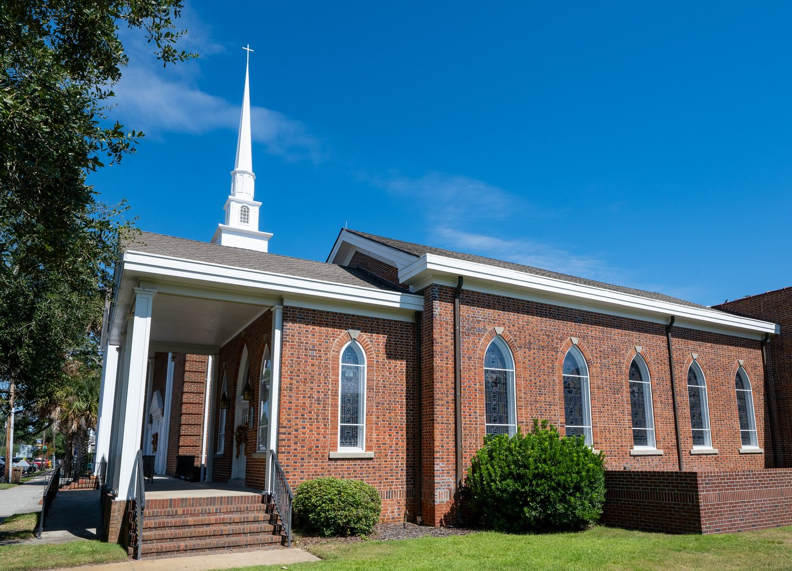
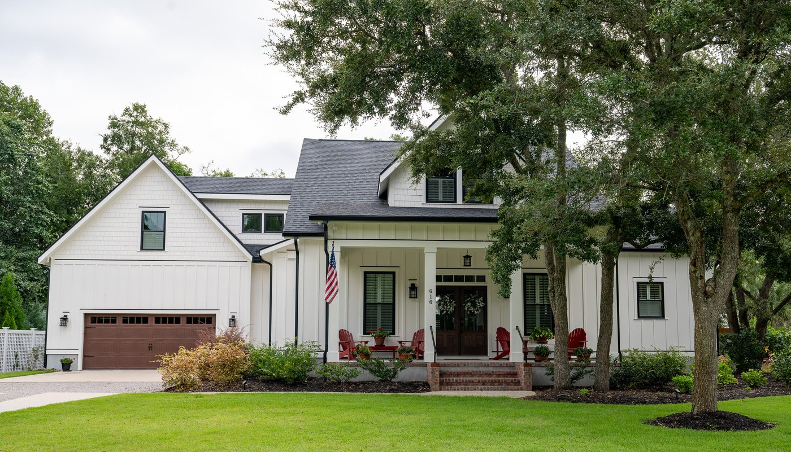
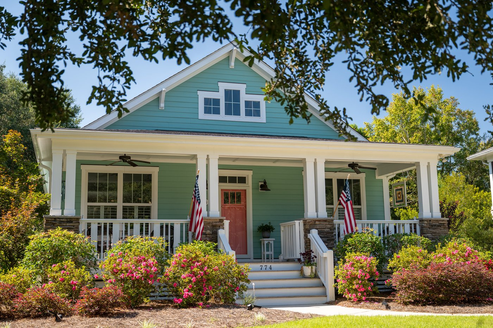

310 College St.
Shannon Huback
Joseph Davis House
Built circa 1867 by Joseph Davis, this home is among Southport’s earliest surviving residences. Original hardwood floors welcome visitors in the foyer, complemented by a double-sided fireplace and Southport bows. trim. Extensive renovations have thoughtfully updated the property with a modern kitchen, new master bath, additional full bath upstairs, a bay window seat, and refreshed paint. Both front and back porches have been reconstructed, and the downstairs bath has been modernized. The result is a home that preserves its historic character while offering comfort and charm for the present day. Sponsored by Boo & Roo’s.

311 E. Bay St.
Judd and Ellen Moul
Dr. Lorenzo Frink House
Built circa 1875 by Dr. Lorenzo Frink and rebuilt in 1890 after storm and fire damage, this home carries a unique legacy of physicians, with both its original builder and its current owner practicing medicine. The house is also tied to Hollywood. Actor Joseph Cotten, Frink’s great-grandson, spent much of his childhood here, and in 2021–22 the property was used in the filming of Monster Summer (released 2024), starring Mel Gibson. A full renovation between 2022 and 2024 preserved original floors, the curving staircase, and historic wood, which was repurposed into beams, mantels, and furnishings. The basement retains stage paint and cobwebs from the movie set as well as a remarkable discovery: Dr. Frink’s signature, written in chalk on a beam and hidden for generations. Today, the house blends modern comfort with a deep sense of history. Sponsored by Sea Glass Realty.

119 N. Lord St.
Rick and Linda Pukenas
Robert Ruark Inn
Built in 1890 by renowned Cape Fear River Pilot Captain Hawley Adkins, the grandfather of celebrated author Robert Ruark, this home has been lovingly preserved as part of Southport’s history. Restored in 2009, it retains original details including Southport bows, diagonal woodwork, a beautiful staircase, hardwood floors, stained-glass lancet windows, Victorian sash windows, four fireplaces and three porches. Newly recreated features and period decor honor its 19th-century character. The addition of ensuite baths allows the historic home to serve as a popular Bed & Breakfast. Sponsored by Sea Glass Realty.

210 N. Lord St.
Janet and Scott Fortney
Joseph Bell House
Built in 1890 on one of Southport’s “First 100” lots, this home features distinctive historic details including Southport bows, four fireplaces, heart-of-pine floors, a coffered living room ceiling with porcelain chandelier, and a vintage stained-glass bathroom door. A carved figurehead in the living room and unique crown moulding in the primary bedroom add to its character. Recent updates include new kitchen and bathrooms, a swimming pool, backyard deck, and complete landscape renovation. For the holiday tour, this home will be decorated for Hanukkah, offering a meaningful contribution to our tradition of holiday homes. Sponsored by Dosher Hospital.

308 N. Dry Street
Myra and Robert Palmeter
Bell-Lewis House
Built in the final decades of the 19th century, this home was commissioned by Mrs. Hester Ann Bell on a generous lot extending from Dry Street to College Street. Since its early years, the property has witnessed a number of changes, including the addition of two dormers in 1902, which enhanced its distinctive roofline. A careful restoration in 2000 brought the house into the modern era while preserving its historic integrity. Original hardwood floors still grace the rooms, offering a glimpse into the craftsmanship of the past. The hallmark Southport Bow, a detail unique to the region, can be admired throughout both the interior and exterior, uniting the home’s historic charm with its enduring elegance. Sponsored by Bald Head Coffee.

209 E. Moore St.
Hosted by innkeepers Amy Coggins and John Mann
The Carriage House Inn
Built in 1937, this distinctive double-brick home retains much of its original character. All four bedrooms and baths still feature their original tile and hardwood floors. The main floor retains the original fireplaces, mantles, and hardwood floors, complemented by the kitchen, sunroom, and screen porch additions. Unlike many houses in Southport this close to the water, this house has a full basement that has been renovated as a living space for the owners/on-site managers. The grounds include the historic carriage house and ancient live oak trees that are prominent within Southport. The carriage house inn has had extensive restorations to the landscaping, fencing, pathways, and landscape lighting. Currently undergoing renovations and restorations, the carriage house itself will be completed in the early spring of 2026. Sponsored by Wade’s Jewelers.

200 N. Howe St.
Southport Baptist Church

605 W. Owens St.
Leigh and Rhonda Armistead
Designed by retired Washington, D.C. architect Sam Condit, this home offers a modern take on the Craftsman bungalow. Completed in 2022, it features an open floor plan with a corner front porch and additional porches that connect the living space to the gardens. Craftsman details such as divided-light windows pair easily with contemporary elements including a linear fireplace, floating shelves, and artisanal lighting. Personal touches include a Graham & Brown Walker seascape mural recalling the owners’ 2019 fifteen-day coast-to-coast walk across England and hand-tended gardens enhanced with custom fencing, raised beds, and Ipe decking. The eclectic decor reflects the owners’ love for travel and art, with North Carolina works and artisanal furniture adding warmth and individuality. Sponsored by Edgewater 122.

616 Arabella Lane
Jack Rudnick
Built in 2022 by its current owner, this home was inspired by the New England farmhouses he once lived in. With higher ceilings, wide molding, and an open plan, it reflects the simplicity of Shaker design within a modern farmhouse style. Upstairs, the guest suite features built-in ship berths, a nod to Southport’s maritime history and a distinctive detail that connects the home to its coastal setting. Original artwork, much of it created by family and close friends, lends the house a deeply personal sense of character and community. Sponsored by Intracoastal Realty.

774 Skipjack Circle
Chris and Colleen Webster
Built in 2018, this home reflects the timeless charm of the Craftsman style with its welcoming front porch, tapered columns on stone piers, and wide gable accented by grouped windows. A back porch extends the living space outdoors, creating a connection to both the garden and the neighborhood. Its turquoise siding, coral front door, and balanced symmetry give the house a cheerful presence, further enhanced by lush landscaping and the display of twin American flags. For the holiday tour, it will be decorated for Christmas, adding festive warmth to its inviting design. Sponsored by Coastal Painting & Improvements.